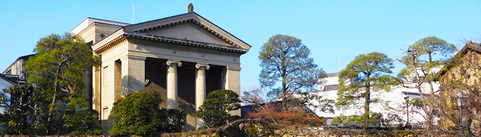
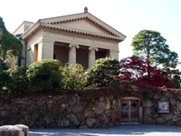
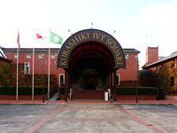
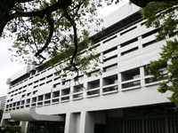
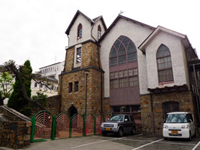

ARCHITECT WHO WAS ACTIVE IN KURASHIKI倉敷で活躍した建築家

倉敷には、古くから残る蔵や町屋などの建築物以外にも素晴らしい近代建築物が多く点在しています。
大原美術館や中国銀行本町支店（旧 第一合同銀行倉敷支店）などを残した薬師寺主計、倉敷アイビースクエアや倉敷国際ホテルなどを残した浦辺鎮太郎のようにその建築物は現在の倉敷美観地区の骨格を担っています。
※各経歴は倉敷の建築物を抜粋しています。
薬師寺主計

（やくしじかずえ）1884年～1965年
岡山県総社市に生まれ、大学在学中に倉敷紡績社長の大原孫三郎と出会い、倉敷のまちづくりに多大なる貢献をしました。また、近代建築の巨匠ル・コルビュジエに会った最初の日本人といわれています。
※写真は大原美術館
浦辺鎮太郎

（うらべしずたろう）1909年～1991年
岡山県倉敷市に生まれ、1962年（昭和37年）に大原總一郎と倉敷建築研究所（現 浦辺設計）を設立し、倉敷を中心に多くの建築作品を残しました。
※写真は倉敷アイビースクエア
丹下健三

（たんげけんぞう）1913年～2005年
大阪府堺市の生まれで、日本人建築家として最も早く国外で活躍、認知された一人。「世界の丹下」と呼ばれ、広島平和公園や代々木体育館、東京都新庁舎など数多くの建築作品を国内外で残しています。倉敷では倉敷市庁舎（現倉敷市立美術館）の設計を手がけました。
※写真は倉敷市立美術館
西村伊作

（にしむらいさく）1884年～1963年
和歌山県新宮市の生まれで、近代住宅建築の先駆者として活躍。倉敷に残されている日本基督教団倉敷教会教会堂、若竹の園保育園園舎が共に2009年（平成21年）に国の有形文化財に登録されています。また、文化学院の創立者で日本の教育者としても知られています。
※写真は日本基督教団倉敷教会教会堂
撮影協力：（財）大原美術館、倉敷市立美術館、（株）倉敷アイビースクエア、日本基督教団倉敷教会
一覧に戻る